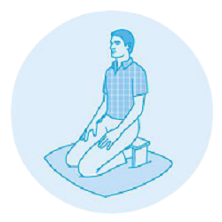

How to Meditate
This meditation focuses on the breath, not because there is anything special about it, but because the physical sensation of breathing is always there and you can use it as an anchor to the present moment. Throughout the practice you may find yourself caught up in thoughts, emotions, sounds—wherever your mind goes, simply come back again to the next breath. Even if you only come back once, that’s okay.
A Simple Meditation Practice
- Sit comfortably. Find a spot that gives you a stable, solid, comfortable seat.
- Notice what your legs are doing. If on a cushion, cross your legs comfortably in front of you. If on a chair, rest the bottoms of your feet on the floor.
- Straighten your upper body—but don’t stiffen. Your spine has natural curvature. Let it be there.
- Notice what your arms are doing. Situate your upper arms parallel to your upper body. Rest the palms of your hands on your legs wherever it feels most natural.
- Soften your gaze. Drop your chin a little and let your gaze fall gently downward. It’s not necessary to close your eyes. You can simply let what appears before your eyes be there without focusing on it.
- Feel your breath. Bring your attention to the physical sensation of breathing: the air moving through your nose or mouth, the rising and falling of your belly, or your chest.
- Notice when your mind wanders from your breath. Inevitably, your attention will leave the breath and wander to other places. Don’t worry. There’s no need to block or eliminate thinking. When you notice your mind wandering gently return your attention to the breath.
- Be kind about your wandering mind. You may find your mind wandering constantly—that’s normal, too. Instead of wrestling with your thoughts, practice observing them without reacting. Just sit and pay attention. As hard as it is to maintain, that’s all there is. Come back to your breath over and over again, without judgment or expectation.
- When you’re ready, gently lift your gaze (if your eyes are closed, open them). Take a moment and notice any sounds in the environment. Notice how your body feels right now. Notice your thoughts and emotions.
Guided meditation
Guided meditation is a process by which one or more participants meditate in response to the guidance provided by a trained practitioner or teacher, either in person or via a written text, sound recording, video, or audiovisual media comprising music or verbal instruction, or a combination of both.